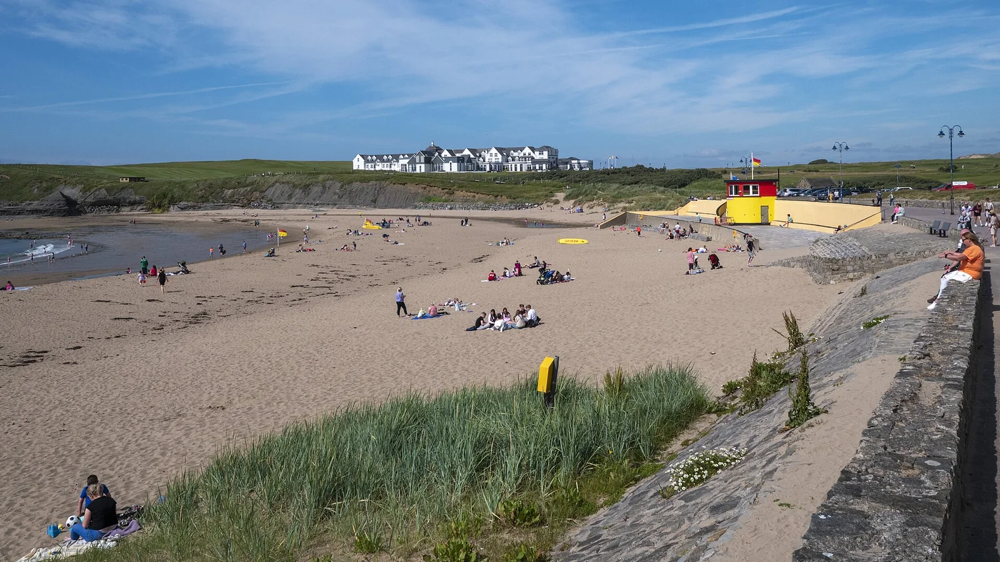

Bundoran — The Peak
Irlande · surf

Le spot phare de l'Irlande : un reef qui offre gauche et droite dans une ambiance celtique.
- Lieu
- Irlande
- Niveau
- Intermédiaire
- Activités
- surf
- Type d'eau
- Mer / océan
- Coordonnées
- 54.48, -8.29 (position approximative du secteur)
Dangers à connaître
- Eau froide.
- Reef.
Le conseil d'Ocean Buddy
Houle régulière de l'Atlantique nord ; combinaison épaisse indispensable.
Ouvrir dans Ocean Buddy Télécharger sur l'App Store
Source : Description historique Ocean Buddy · vérification externe en attente.